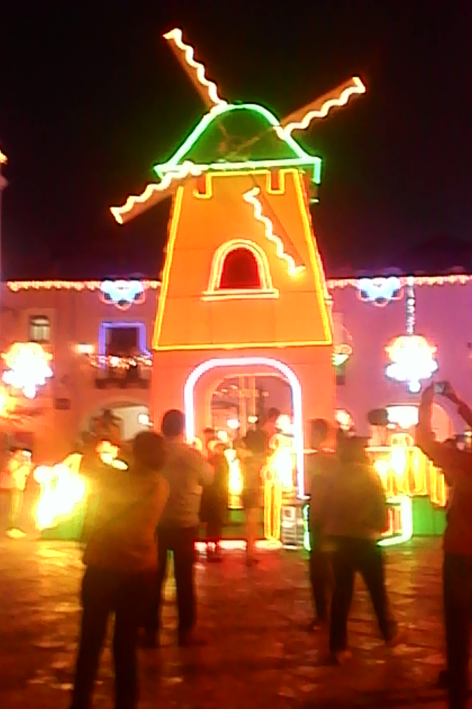

Menú

Este 25 de noviembre sera la inauguración de la villa iluminada en atlixco con mas de tres mil figuras iluminadas de colores con un nuevo diseño Jose Luis Galeazzi indica que se tendrán eventos culturales y artísticos en la que participaran mas de 30 grupos nacionales e internacionales de países como Guatemala,Perú,España,Italia,Chile,Irlanda,Libia y artista de la región de Atlixco. A todo esto en esta cuarta villa iluminada se esperan mas de 500 Mil Visitantes y una derrama económica de mas de 50 Millones De Pesos. Todo este evento dará inicio del 25 de Noviembre Finalizando el 6 de Enero en el festejo del Día De Reyes

por si puedes llegar a nuestra gran selebridad que es la villa Iliminada a qui te indicamos como :D

Los edificios antiguos serán engalanados con luces, lo que destacará su bella arquitectura y valor histórico.
A partir del 25 de noviembre los mejores productores de la región exponen y venden una variedad enorme de plantas de Nochebuena a precios competitivos en mayoreo y menudeo concentrados en el Recinto Ferial de Atlixco.
Nochebuena, es la celebración que se lleva a cabo el 24 de diciembre, o sea de manera "previa" al nacimiento de Jesús, como una preparación festiva, ya que se celebra su nacimiento propiamente tal el 25 de diciembre (nadie sabe a ciencia cierta cuando nació, pero tradicionalmente asociamos el acontecimiento a está fecha). Es una distinción sutil, claro, ya que justo a la medianoche se abren los regalos y se celebra el nacimiento de Jesús, pero de todas maneras es interesante: una cosa es la celebración previa, y otra es la "natividad" que esperamos. Las tradiciones para Nochebuena varían de país en país, pero lo que se suele organizar es una gran cena que reúna ojalá a toda la familia. El menú suele incluir el tradicional pavo acompañado de puré de manzanas, y se bebé champán. No hay ningún motivo de fondo para esto, por lo que en algunos lugares se privilegia la comida tradicional local. Además durante el día 24 se realizan obras representando el nacimiento de Jesús, se va a misa y se cantan villancicos. El interior de los hogares para esta fecha ya está "temáticamente" decorado para la ocasión, con el árbol navideño y los regalos a sus pies. Al día siguiente, o sea el 25, después de Nochebuena, lo que se hace es dedicar el día al descanso y la contemplación, se visitan a los familiares y se comparte tranquilamente. :)
por si puedes llegar a la Feria De La Nochebuena A qui te decimos como :D